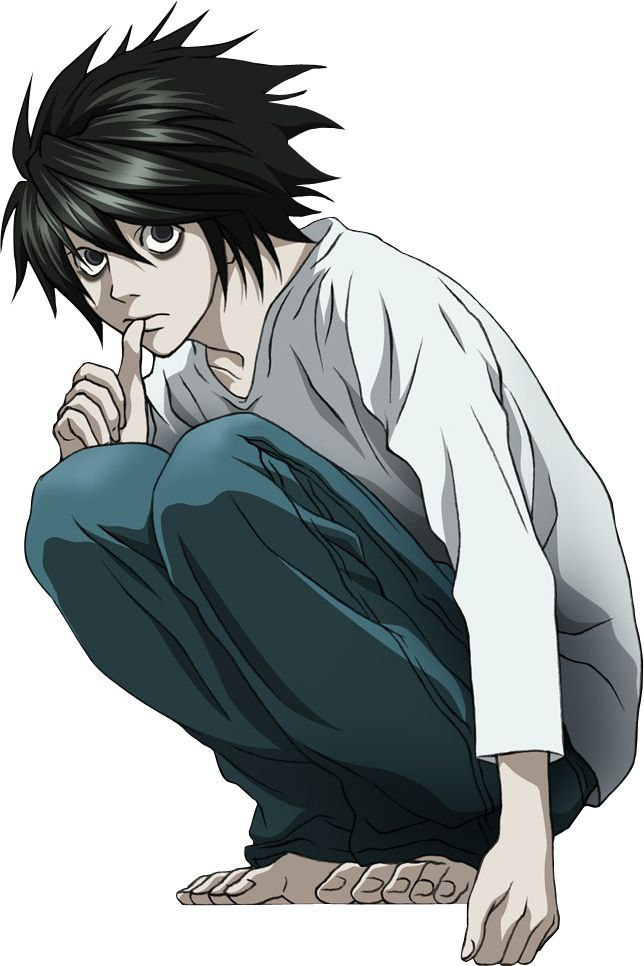
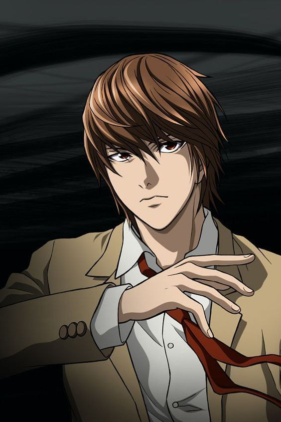

The top 3 most loved characters from the anime Death Note

L Lawliet is one of the most brilliant and unconventional detectives in anime, known for his eccentric habits, sharp intuition, and unmatched deductive ability. With his messy hair, strange posture, and love for sweets, L appears odd at first glance, but his mind works with remarkable precision. He approaches every case with cold logic, an almost emotionless calmness, and a willingness to take extreme risks to uncover the truth. In the hunt for Kira, he becomes Light Yagami’s intellectual rival, engaging in a tense psychological battle where trust, suspicion, and manipulation constantly shift. Despite his detached demeanor, L shows subtle hints of kindness and vulnerability, making him one of the most human characters in the series. His presence raises the stakes of the story, turning the conflict into a brilliant duel between two extraordinary minds.

Light Yagami begins as a gifted, disciplined high-school student who feels bored and frustrated with the world’s corruption. When he discovers the Death Note, he sees it as a divine opportunity to cleanse humanity and build a utopia free of crime. However, his initial desire for justice quickly twists into obsession, arrogance, and a god complex that consumes him. Light’s intelligence and charm allow him to hide behind the persona of a perfect student while secretly operating as Kira, manipulating people and creating elaborate strategies to evade capture. His gradual descent into moral darkness exposes the dangers of unchecked power and self-righteousness. As Light balances his public identity with his secret one, he becomes one of anime’s most iconic anti-heroes, embodying the thin line between justice and tyranny.

Ryuk is the Shinigami who drops the Death Note into the human world out of sheer boredom, setting the entire story in motion. Unlike many supernatural beings in anime, Ryuk is neither good nor evil, he simply finds entertainment in watching humans make choices, create chaos, and face the consequences. His dry humor, mischievous grin, and constant craving for apples make him an unforgettable presence. Though he never interferes directly with Light’s decisions, Ryuk observes everything with amused detachment, offering occasional commentary but always reminding Light that he is not a friend, only an observer. In many ways, Ryuk represents the unpredictability and moral ambiguity of the Death Note itself, watching the rise and fall of Kira with the curiosity of someone watching a game unfold.